Help and documentation
(0.4.1)
· Introduction
· Modules
§ RATIOS
§ SBT
§ REPORT
§ SANSON
§ WSPP-SBT
§ WPP-SBT
§ WPPG-SBT
§ Keywords for the Task-Tables
§ Asterisk is our jack of all trades
· Adaptors
o Close search: Inputs from PD
o Close search: Inputs from MSFragger
o Close search: Inputs from MaxQuant
iSanXoT is a Graphical User Interface application that executes workflows for quantitative high-throughput proteomics, systems biology and the statistical analysis, integration and comparison of experiments, based on SanXoT (Trevisan-Herraz et al., 2019) integrations.
The workflows developed with iSanXoT follow a modular structure, where the main modules are: INTEGRATE, NORCOMBINE, SBT, RATIOS, LEVEL CREATOR, and LEVEL CALIBRATOR. The data of each level are analysed independently and sequentially.
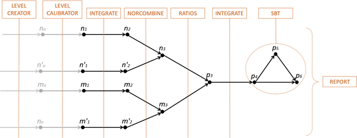
The parameters of each module are described by means a task-table.
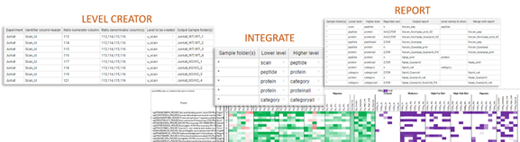
The iSanXoT application for Windows distribution is packaged in a NSIS Launcher (exe file).
Download the Launcher in the assets part from the release link:
https://github.com/CNIC-Proteomics/iSanXoT/releases
Double-click the Launcher file to open it, and you'll see an Installer window.
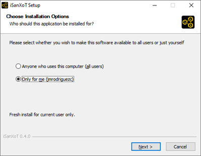
Then, you can choose the folder in which to install iSanXoT
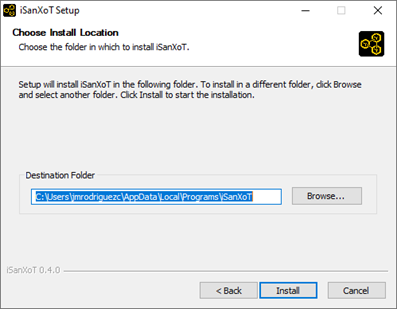
Wait while iSanXoT is being installed
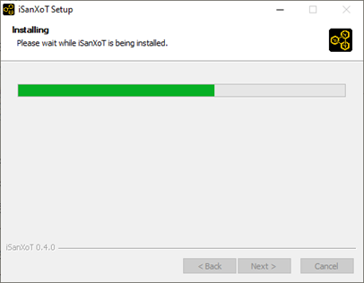
Finally, you'll see a window telling you completed setup. You can run iSanXoT immediately if you want.
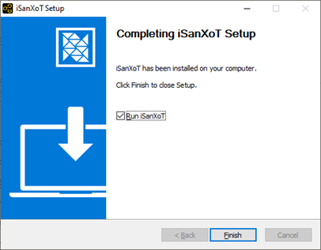
The iSanXoT application for MacOS distribution is packaged in a DMG container.
Download the DMG file in the assets part from the release link:
https://github.com/CNIC-Proteomics/iSanXoT/releases
Double-click the DMG file to open it, and you'll see a Finder window. Often these will include the application itself, some form of arrow, and a shortcut to the Applications folder.
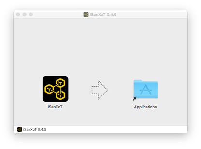
Simply drag the iSanXoT icon to your Applications folder...
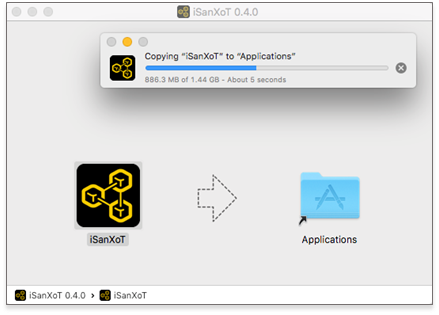
and you're done: the iSanXoT app is now installed.
The iSanXoT application for Linux distribution is packaged in an AppImage.
Download the AppImage in the assets part from the release link:
https://github.com/CNIC-Proteomics/iSanXoT/releases
The AppImage file is just the application's compressed image. When it runs, the file is mounted in the unique temporal folder everything the application is opened. However, for the correct behaviour of iSanXoT, the application has to be extracted into the directory "squashfs-root" in the current working directory doing the following sentence:
./iSanXoT_Launcher.AppImage --appimage-extract
Then you can now run the iSanXoT application doing:
squashfs-root/AppRun
This chapter describes the graphical interface of the iSanXoT desktop application and how to set up an analysis in iSanXoT.
To open the iSanXoT application:
· In Windows: from the Start menu choose Programs > iSanXoT, or by clicking the desktop icon.
· In MacOS: from the Application folder and clicking on iSanXoT icon.
· In Linux: from the AppImage file.
The contents are extracted into the directory "squashfs-root" in the current working directory doing the following sentence:
./iSanXoT_Launcher_0.4.1.linux-x86_64.AppImage --appimage-extract
Then you can now run the iSanXoT application:
squashfs-root/AppRun [...]
The first thing you see when iSanXoT run is a frame window. This window displays a progress-bar that informs you about the percentage of packages that have been installed. These packages are the libraries that are required by the backend of iSanXoT, and they are installed in the first time you open the application.
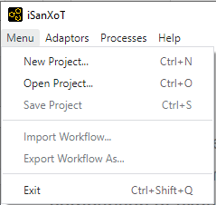
Save your project before you exit the iSanXoT application, because it does not prompt you.
1. To close the iSanXoT application:
· In Windows and Linux: choose Menu > Exit, or click the X in the upper right corner of the main iSanXoT window.
· In Mac: choose iSanXoT (menu) > Exit, or click the red X in the upper left corner of the main iSanXoT window.
2. An informative dialog box asks you: “Do you really want to close the application?”. Click Yes (if that you want)
The iSanXoT Start page is a preliminary front page before the main view of iSanXoT.
The first step in conducting an analysis in the iSanXoT application is to create a project. A project is primarily a container that you use to structure your input file(s) adaptor and your workflow data. The input file adaptors transform the identification files of multiple search engines (see Adaptors section). The workflows are based on SanXoT software packages that include quantitative proteomic analysis, systems biology, and comparison and merging of experimental data from technical or biological replicates (see Workflows section).
It is one of available menu items initially, New Project. This menu opens a window which allows the definition of name of project and the folder that the project will be saved.
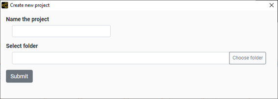
This menu opens a folder dialog that allows to attach the folder of archived project and then, open itself in iSanXoT.
The main view of iSanXoT application is composed by a menu, several tabs, and the content panel and execution panel.
The Menu contains the following items:
· Menu: houses the operations for the project and workflow.
· Adaptors: contains the several adaptors (see Adaptors section).
· Processes: link to the iSanXoT view of processes executing (see the Processes executing).
· Help: houses the several sections of iSanXoT help.
There are some tabs in iSanXoT. Each tab is used for different adaptor or modules.
1. The first tab is used for the selected Adaptors (see Adaptors section).
2. The second tab is used for the Relation Table module (see RELS CREATOR module).
3. The third tab contains the Basic modules (see Basic modules section).
4. This tab contains the Complete modules (see Complete modules section).
5. The last tab contains the Report modules (see Report modules).
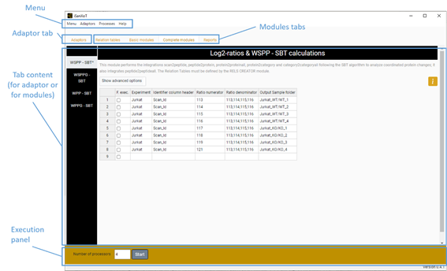
Figure 1. iSanXoT main view.
This panel houses the content of the adaptors and the modules that it is different in each case. However, there are some common patterns. At the left side of panel, there is a sidebar menu that shows the multiple modules that compose the tab-section. For example, the sidebar menu of “Basic modules” tab contains the list of basic modules, the sidebar menu of “Complete modules” tab contains the complete modules, and so on. Other common pattern is a help icon for the specific module or adaptor you are seen in the Content panel. In addition, there is a title and a briefly description for that specific module.
The execution panel is composed by a field which you can indicate how many processors you want to use in your execution, and “Start” button to execute your workflow.
A project contains, as well as the input file(s), the workflow data that are based on SanXoT software packages. There is a way to import and export just the workflow structure by means of two menu items.
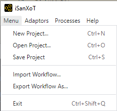
This option allows to import the task-tables of a workflow. For that, you have to provide the folder where the workflow is saved.
The export workflow saves the task-table data of a workflow in the given folder.
In the moment to execute a project work, new window is opened. This window shows the processes executing through which is composed by two tables:
· Project logs table: shows the status of a project execution. It is possible to see several projects executions and you have to click to the row to see their own workflow logs.
· Workflow logs table: displays the status for each job from the multiple modules. If you click on row you will see the trace log of the implicated jobs (except in the case of “cached” status).
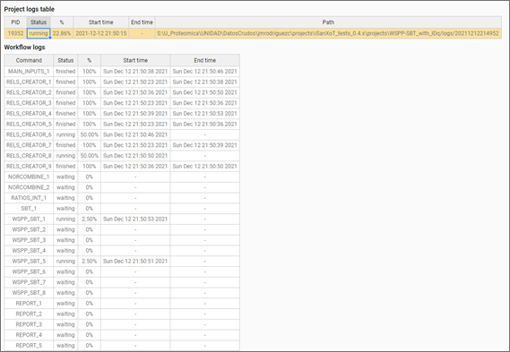
Figure 2. View of processes executing.
You can see also this window of processes executing from the “Processes > Main page” menu.
The iSanXoT desktop application houses several modules based on the SanXoT software package [1]. The execution of each module is done and is described by means of a Task-Table (TT). These TT represent the parameters that are needed to the setting up and the execution of module.
There are three types of modules:
· Basic modules: These modules are inherently based on the SanXoT packages [1]. They represent the minimal expression of integration in SanXoT.
· Report modules: These modules are used to extract the information from the integrations and to generate the similarity graph of a set of categories.
· Complete modules: These modules conform the fundamental statistical models where the WSPP model [3] was described for quantitative proteomics analysis and the SBT model [2] for system biology analysis.
This module parse data from a given tabular file, extract several columns creating a file with tab separated table, Relation Table (RT). These RT created, are used by the integrations in the rest modules. For this reason, the name of RT indicated by the parameter/column of its task-table (“Relation Table to be created”), has to coincide with the “lower-level” and the ”higher-level” of the integration; e.g. whether an integration is between the “peptide” to “protein” levels, the RT applied has to be called “peptide2protein”.
The parameters/columns of this module are:
· Forced execution: checkbox that determines to force the execution or not.
· Relation Table to be created: indicates the file name of relation table. This name must be formed with the lower level to higher level for one integration.
· Column name of Lower level: column name from the given tabular file that will use for the lower level in the resulted RT.
· Column name of Higher level: column name from the given tabular file that will use for the higher level in the resulted RT.
· Column name of 3rd column: column name from the given tabular file that will use for the third column in the resulted RT.
· Table from which RT is extracted: file name with path which the levels are extracted. This file has to be in tabular format. In this parameter the keywords can be used. For more details read “Keywords for the Task-Tables” in the “Special parameters” section.
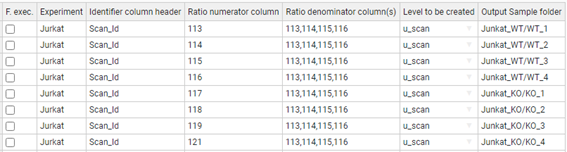
Figure 3. Task-Table example of RELS CREATOR module.
The LEVEL CREATOR module creates a level that it the quantitative data. This data file is text file that contains three columns: identifier (a text string that is used to identify the element), quantitative value (X: 2-base logarithm of the ratio of the two quantitative measurements) and prior weight (V: a parameter that measures the accuracy of the quantitative value before performing the integration).
This module takes the preliminary data from a Quantification table (ID-q file) that is provided by the user applying the “Main Input” adaptor, or it is created by one of adaptors. For more details, read the “Adaptors” section.
The parameters/columns of this module are:
· Forced execution: checkbox that determines to force the execution or not.
· Experiment: is the name of experiment. This value has to be in a column called ‘Experiment’ within the Quantification data (ID-q file). Only the data with the value specified in 'Experiment' column will be extracted.
· Ratio numerator column: specifies which sample quantification values make up the numerator for the calculation of log2-ratio values.
· Ratio denominator column(s): specifies which sample quantification make up the denominator for the calculation of log2-ratio values.
· Level to be created: designates the level name.
· Output Sample folder: indicates the name of the folder where the data file of level will be saved.
Figure 4. Task-Table example of LEVEL CREATOR module.
This module calibrates the V values of a level by performing the specified integration. This calibration is done using the “klibrate” program developed in the SanXoT software package [1].
To perform the calibration two parameters have to be calculated: the k (weight constant), and the variance. They are calculated iteratively using the Levenberg-Marquardt algorithm. More detailed information may be found in “klibrate” integration from SanXoT software package [1].
The calibrated level contains the same information as the original level from LEVEL CREATOR module, but changing the values of the third column (containing the weights) to adapt the information to the calibrated weights that can be used as input in the INTEGRATE module.
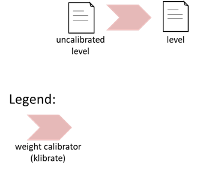
Figure 5. Schema of LEVEL CALIBRATOR module.
The parameters/columns of this module are:
· Forced execution: checkbox that determines to force the execution or not.
· Sample folder(s): indicates the names of the folders where the uncalibrated data is located. These data files have been created by LEVEL CREATOR module.
· Lower level for integration: indicates the name of lower-level for the integration during the calibration.
· Higher level for integration: indicates the name of higher-level for the integration during the calibration.
· Name of calibrated level: designates the level name.
· Output Sample folder: indicates the name of the folder where the data file of level will be saved.
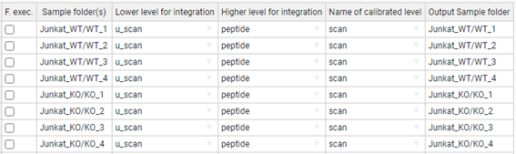
Figure 6. Task-Table of LEVEL CALIBRATOR module.
The INTEGRATE module performs WSPP-statistics by applying iteratively the Generic Integration Algorithm (GIA) [2] on the data. Each GIA integration performs an independent statistic and its output may be used as input for the following integration step.
This module is applied to integrate lower-level data to higher-level data. For example, to integrate from peptide-level data to protein-level, or to integrate from protein-level data to gene-level.
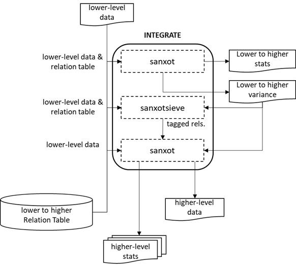
Figure 7. Schema of INTEGRATE module. Integration from any lower-level to any higher-level, using the Generic Integration Algorithm (GIA) which is composed by the programs: “sanxot” and “sanxotsieve”.
Each INTEGRATE needs as input tab-separated text tables:
1. Data file, that contains the quantitative data of the lower level. This file contains three columns: identifier (a text string that is used to identify the element), quantitative value (2-base logarithm of the ratio of the two quantitative measurements) and prior weight (a parameter that measures the accuracy of the quantitative value before performing the integration).
2. Relation table (RT), which establishes the correspondence of the identifiers in the lower level with those in the higher level. This file contains two columns, the first one has the identifiers of the higher level and the second one the identifiers of the lower level.
The INTEGRATE generates an output data file containing the quantitative data of the higher level. This file can be used as input for the others modules.
Figure 8. Flowchart of INTEGRATE module. A first integration is done with “sanxot” that calculates the variance; “sanxotsieve” removes the outliers tagging them in a new relation table; a second integration is done with “sanxot” using the fixed variance calculated in the first step and removing the outliers tagged in the relations table.
Each integration takes the input data file from the lower-level and the RT, calculates the general variance of the integration (using a robust iterative method) and generates as output a data file containing the integrated quantifications of the higher-level. The integration is done using the “sanxot” program.
In addition to the quantitative data, each integration may generate several additional files which contain information about the integration. More detailed information may be found in exploring SanXoT program [1].
One of the advantages of this integration is that it provides a straightforward method to eliminate outliers [3] in each integration step. This is done by calculating standardized log2-ratios (z-values) allowing to estimate the probability for each element of the lower level is a significant outlier of the z distribution (e.g., N(0,1)) and also to obtain the associated FDR. The most extreme outliers may be removed sequentially and the integration repeated, until all outliers below a user-defined FDR-level are removed.
Outlier removal is performed by the “sanxotsieve” program by tagging the outlier elements in a new relation table. Then, a second integration is done by “sanxot” program using the fixed variance calculated in the first integration (“sanxot” program) and discarding the outliers tagged in the relations table.
The parameters/columns of this module are:
· Forced execution: checkbox that determines to force the execution or not.
· Sample folder(s): indicates the names of the folders where the lower-level data is located.
· Lower level: indicates the name of lower-level. The module will use the data file with the same name and it contains the three columns with the identifier, quantitative value and prior weight.
· Higher level: indicates the name of higher-level to integrate.
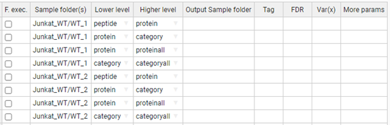
Figure 9. Task-Table example for INTEGRATE module.
The Task-table is the way to execute the module. Each row represents one or more executions.
This module performs an integration from an existing lower-level to a higher-level using a previously created Relation Table whose name matches the higher and lower levels (e.g. if the user wants to integrate from peptide to protein, the module will use the Relation Table called scan2peptide.
This module accepts advanced parameters:
· Tag: label that below to accept or discard elements is the calculation of variance. By default, the “outliers” are discarded.
· FDR: limit of False Discovery Rate different than 0.01 (1%). If FDR = 0, then the “outliers” are not discarded.
· Var(x): force a variance. By default, the variance calculated by first “sanxot” is applied.
· More params: allows to add more parameters to the programs inside the program. For more detail read “More params” in “Special Parameters” section.
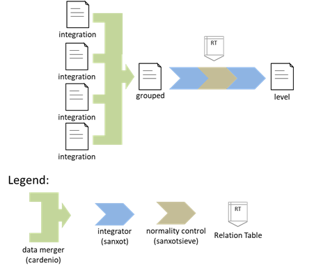
Figure 10. Task-Table example with advanced parameters for INTEGRATE module.
NORCOMBINE is a module to integrate technical or biological replicates. For example, there are multiple proteins obtained from integrations separately for each replicate and then the protein-level data are integrated to obtain protein averages (grouped-level data).
Figure 11. Schema of NORCOMBINE module. Integration of technical or biological replicates.
The Merging of experiments is done within NORCOMBINE module using the “cardenio” program from the SanXoT software package [1]. “Cardenio” is used to generate suitable relation tables to make averages from technical or biological replicates. Then, NORCOMBINE normalizes ("center") the data integrating the grouped-level to take into account the systematic quantitative error of each experiment.
This module needs a set of files, produced by INTEGRATE module:
· “lowerNormV”: this file contains three columns:
o the identifiers of the lower level,
o the second column contains the Xinf - Xsup (i.e. the ratios of the lower level, but centred for each element they belong to), and
o the third column is the former untouched V(inferior) weight.
· “lowerNormW”: this file contains three columns. The first two are the same than “lowerNormV” but the third is the new weight W(inferior) containing the variance of the integration.
More detailed information may be found in “sanxot” integration from SanXoT software package [1].
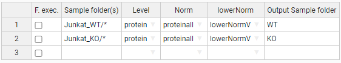
Figure 12. Flowchart of NORCOMBINE module.
The parameters/columns of this module are:
· Forced execution: checkbox that determines to force the execution or not.
· Sample folder(s): indicates the names of the folders where the lower-level data is located.
· Level: indicates the name of level. The module will use the data file with the same name of level.
· Norm: specifies the normalization scheme (“proteinall” here) to be used with level.
· lowerNorm: selects the type of lower normalization to use: V (the untouched V weight) or W (the new weight containing the variance of the integration).
· Output Sample folder: the name of the folder where the resulting be saved.
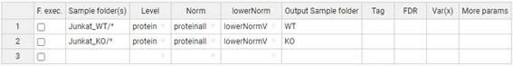
Figure 13. Task-Table example for NORCOMBINE module. In this case, the asterisk wildcard has been used to select multiple sample folders.
This module accepts advanced parameters belonging to the integration part:
· Tag: label that below to accept or discard elements is the calculation of variance. By default, the “outliers” are discarded.
· FDR: limit of False Discovery Rate different than 0.01 (1%). If FDR = 0, then the “outliers” are not discarded.
· Var(x): force a variance. By default, the variance calculated by first “sanxot” is applied.
· More params: allows to add more parameters to the programs inside the program. For more detail read “More params” in “Special Parameters” section.
Figure 14. Task-Table with advanced parameters for NORCOMBINE module.
This module calculates the statistical weight of the newly calculated log2-ratios from two comparison samples. This module takes (X,V) of given level from the numerator and denominator samples. It calculates the difference for the new X value (i.e. log2 of the indicated ratios), and combines the V values using the indicated method. Then, the result (X,V) is stores as the same level in the output sample folder.
This module takes calculates the new (X,V) values from the numerator and denominator samples. The new X value is the difference between both X’s values. The “V method” determines how to calculate the new V value. These methods are:
· the maximum of both V’s.
· the applied form V = 1/(1/V1+1/V2).
· and the average of both V’s.
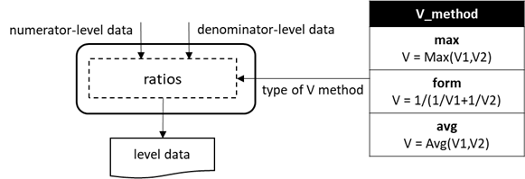
Figure 15. Flowchart of RATIOS module.
The parameters/columns of this module are:
· Forced execution: checkbox that determines to force the execution or not.
· Ratio numerator: indicates which sample contains the level required to make up the numerator of the ratio to be calculated (“KO” in this case).
· Ratio denominator: indicates which sample contains the level file required to make up the denominator of the ratio to be calculated (“WT” in this case).
· Level: specifies the level from where the ratio calculation should be made.
· Output Sample folder: the name of the folder where the resulting log2-ratio and statistical weight values will be saved (“KO_vs_WT” in our example).
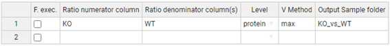
Figure 16. Task-Table of RATIOS module.
This module is based on The Systems Biology Triangle model [2]. The SBT model performs a triangular integration using lower level, intermediate level and higher level. It is common the levels would be protein, category as lower and intermediate level, and the higher level would be the grand mean. From this way, the SBT module performs a Systems biology analysis.
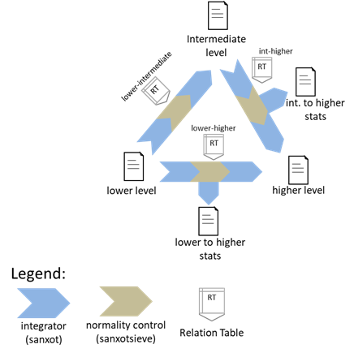
Figure 17. Schema of SBT module.
The parameters/columns of this module are:
· Forced execution: checkbox that determines to force the execution or not.
· Sample folder(s): indicates the names of the folders where the levels data are located.
· Lower level: indicates the name of lower-level (“protein” in this case).
· Intermediate level: indicates the name of intermediate-level (“category”).
By default, the higher-level is the grand mean of each level.
Figure 18. Task-Table of SBT module.
This module accepts advanced parameters belonging to the integration part:
· Output Sample folder: the name of the folder where the resulting log2-ratio and statistical weight values will be saved (“KO_vs_WT” in our example).
· Lower-Higher level and Int(ermediate)-Higher level: in the case you don’t want to use the grand mean for the higher level, you can the level for the respective integration.
· Low(er) > Int(ermediate) Tag and Int(ermediate) > Hig(her) Tag: labels from lower level to intermediate level and from intermediate level to higher level respectively that below to accept or discard elements is the calculation of variance. By default, the “outliers” are discarded.
· Low(er) > Int(ermediate) FDR and Int(ermediate) > Hig(her) FDR: limit of False Discovery Rate different than 0.01 (1%) for the from lower level to intermediate level and from intermediate level to higher level respectively. If FDR = 0, then the “outliers” are not discarded.
· Low(er) > Int(ermediate) Var(x) and Int(ermediate) > Hig(her) Var(x): force a variance for the from lower level to intermediate level and from intermediate level to higher level respectively. By default, the variance calculated by first “sanxot” is applied.
· More params: allows to add more parameters to the programs inside the program. For more detail read “More params” in “Special Parameters” section.
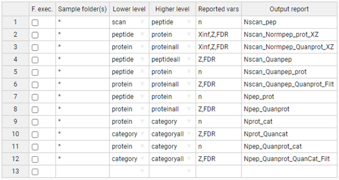
Figure 19. Task-Table with advanced parameters for SBT module.
The REPORT module allows the collection of the integration data into a result table. It compiles the statistical results from the given integration and stores the values in a single table.
The parameters/columns of this module are:
· Forced execution: checkbox that determines to force the execution or not.
· Sample folder(s): indicates the names of the folders where the statistical data for each integration is located.
· Lower level: indicates the starting level (peptide, protein, category) for the integration whose data are to be reported.
· Higher level: indicates the ending level for the integration whose data are to be reported.
· Reported vars: specifies which statistical variables will be reported. The available variables are “n”, “tags”, “Z”, “FDR”, “Xsup”, “Vsup”, “Xinf”, “Vinf”.
· Output report: is the report filename (without extension).
Figure 20. Task-Table of REPORT module.
The first row of above task-table takes the “n” variable from the statistical data of “scan-peptide” integration (scan2peptide_outStats.tsv file). This means, from the indicated lower level and higher level. Due to asterisk wildcard, the report of this row will contain all samples of the experiments. The output of this report will be saved into “Nscan_pep” filename in the “reports” folder of your project.
The second row takes the “Xinf”,”Z”, and “FDR” variables from the statistical data of “peptide-protein” integration. Also, this row will create a report file for all samples of the experiments, called “Nscan_Normpep_prot_XZ”.
The description of the rest of rows are similar.
This module accepts advanced parameters:
· Level names to show: if you don’t want to show one of the level data in the report. By default, all the levels are shown.
· Merge with report: Join with designates the file whose Reported vars will be incorporated into Output after intersection with the latter file.
· Add columns from relation table: insert into the current report the columns from the relation table (RT) at the end. The RT columns are added based on the values of the “lower level”. It is possible to use multiple RT separated by comma.
· Filter: the data of report could be filtered based on the reported variables (n, Z, FDR, etc). For more detail read “Filter” in “Special Parameters” section.
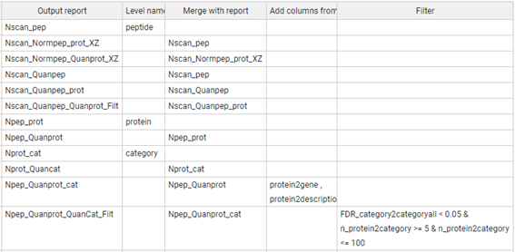
Figure 21. Task-Table with advanced parameters for REPORT module.
The way to merge one report with another is through the column names “Output report” and “Merge with report”. Each row represents one report and the “output report” is the file name of this report. The “merge with report” houses the name of previous report name that will be used to join its own data with the current report.
Figure 22. Example of join of two reports. The first row creates a report with the (n)umber of peptides per scan, and this data is saved in “Nscan_pep” file. The second row creates a report file called “Nscan_Normpep_protXZ” with the variables “Xinf”, “Z”, and “FDR” for the integration peptide to protein. In addition, the (n)umber of peptides per scan that are saved in the “Nscan_pep” report file, will join to this report based on the values of “peptide” (lower level).
In addition, it is possible to add more data into the report from one or more relation tables (RTs). The condition for the adding is that the name of lower level is within the column names of RT. If this is the case, the columns from RT are added based on the values of lower level. If not, the REPORT module checks whether the name of higher level is with in the column names of RT. If this is the case, the columns are added based on the values of higher level. Otherwise, the module does nothing.
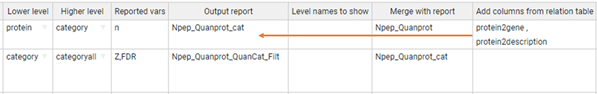
Figure 23. Add data into report from relation tables. The RT “protein2gene” contains one column with the protein identifiers, named “protein”, and another column with the gene of each protein. The RT “protein2description” contains also the protein identifiers with a column name “protein” and another column with the description of each protein. The gene names and the protein descriptions contained in these RTs will be included in the “Npep_Quanprot_cat” report file based on the protein identifiers (“lower level”).
Moreover, the data of report file could be filtered from the “Filter” parameter based on logical conditions over the reported variables. The filtering could be as in these examples:
· n_protein2category == 5, retrieves the data report which the (n)umber of categories per protein is equal to 5.
· n_protein2category <= 100, retrieves the data which the (n)umber of categories per protein is less than or equal to 100.
· n_protein2category >= 5 & n_protein2category <= 100, retrieves the data which the (n)umber of categories per protein is greater or equal than 5 and less or equal than 100.
· KO_vs_WT@FDR_category2categoryall < 0.05, retrieves the data which the FDR of category to categoryall integration from “KO_vs_WT” samples is less than 5%.
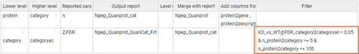
Figure 24. Filtering the report data.
The variables in the filtering have a standard composition. In the following example, “n_protein2category”, the variable is composed with the reported variable (n) and the integration (protein2category). This filter is applied for the protein to category integration of all samples.
However, in the example of “KO_vs_WT@FDR_category2categoryall”, the filter is applied in the “FDR” variable of category to categoryall integration but only for the “KO_vs_WT” sample folder. Moreover, in the example “WT1,WT2@FDR_category2categoryall” the filter is applied for the “WT1” and “WT2” samples.
The SANSON module detects the categories that enclose a similar set of proteins, and then, it shows the changing proteins within each category generating a similarity graph.
The parameters/columns of this module are:
· Forced execution: checkbox that determines to force the execution or not.
· Sample folder(s): indicates the names of the folders where the lower-level data is located.
· Lower level: indicates the name of lower-level (“protein” in this case).
· Higher level: indicates the name of higher-level to integrate (“category” in this case).
· Output Sample folder: the name of the folder where the resulting be saved.
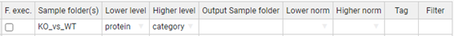
Figure 25. Task-Table of SANSON module.
This module accepts advanced parameters:
· Lower norm: specifies the normalization scheme to be used with the lower level.
· Higher norm: specifies the normalization scheme to be used with the higher level.
· Tag: filter the label of tags. By default, the “out” tag coming from the outliers is filtered.
· Filter: the data of report could be filtered based on the reported variables (n, Z, FDR, etc). For more detail read “Filter” in “Special Parameters” section.
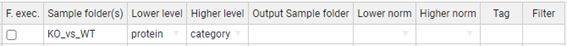
Figure 26. Task-Table with advanced parameters for SANSON module.
SanXoT [1], our previous publicly available implementation of the weighted spectrum, peptide, and protein (WSPP) statistical model [2] using the Generic Integration Algorithm (GIA) [3]. The WSPP model is unique in that it considers the error structure of the raw mass data and the steps of sample preparation, addressing the corresponding error sources separately, by analysing the spectrum, peptide, and protein levels independently and sequentially. The model resolves most of the issues related to quantitative proteomics analysis, including undersampling, the need for a null hypothesis, the proteome dynamic range and the non-normality of protein abundance change distributions [2]. In addition, the Systems Biology Triangle (SBT) [2] is a new algorithm that allows the study of protein coordination by pairwise quantitative proteomics and detects statistically significant coordination in diverse biological models of very different nature and subjected to different kinds of perturbations. Here we represent multiple modules that allow the execution of combination of WSPP and SBT accompanied by more complete modules.
This module performs the integrations scan to peptide (scan2peptide), peptide to protein (peptide2protein), and protein to category (protein2category). In addition, there are the integrations peptide to peptideall (peptide2peptideall), protein to proteinall (protein2proteinall), and category to categoryall (category2categoryall). After all these integrations, the SBT algorithm follows to analyze coordinated protein changes.
The parameters/columns of this module are:
· Forced execution: checkbox that determines to force the execution or not.
· Experiment: is the name of experiment. Only the data with the value specified in 'Experiment' column will be extracted.
· Identifier column header: is the name of column with the identifier that describes unequivocally a scan.
· Ratio numerator column: specifies which sample quantification values make up the numerator for the calculation of log2-ratio values.
· Ratio denominator column(s): specifies which sample quantification make up the denominator for the calculation of log2-ratio values.
· Output Sample folder: indicates the name of the folder where the data file of level will be saved.
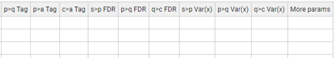
Figure 27. Task-table example for WSPP-SBT, WSPPG-SBT, WPP-SBT, WPPG-SBT modules.
This module accepts advanced parameters:
· p>q Tag, p>a Tag, c>a Tag: labels that below to accept or discard elements is the calculation of variance for the integrations: peptide2protein, peptide2peptideall, and category2categoryall, respectively. By default, the “outliers” are discarded.
· s>p FDR, p>q FDR, q>c FDR: limit of False Discovery Rate different than 0.01 (1%) for the following integrations: scan2peptide, peptide2protein, and protein2category. If FDR = 0, then the “outliers” are not discarded.
· s>p Var(x), p>q Var(x), q>c Var(x): force a variance for the integrations: scan2peptide, peptide2protein, and protein2category. By default, the variance calculated by first “sanxot” is applied.
· More params: allows to add more parameters to the programs inside the program. For more detail read “More params” in “Special Parameters” section.
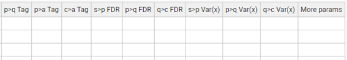
Figure 28. Task-Table example with advanced parameters for WSPP-SBT module.
This module performs the integrations scan2peptide, peptide2protein, protein to gene (protein2gene), and gene to category (gene2category). In addition, there are the integrations peptide to gene (peptide2gene), peptide2peptideall, protein2proteinall, gene to geneall (gene2geneall), and category2categoryall. After all these integrations, the SBT algorithm follows to analyze coordinated gene changes.
The parameters/columns of this module are:
· Forced execution: checkbox that determines to force the execution or not.
· Experiment: is the name of experiment. Only the data with the value specified in 'Experiment' column will be extracted.
· Identifier column header: is the name of column with the identifier that describes unequivocally a scan.
· Ratio numerator column: specifies which sample quantification values make up the numerator for the calculation of log2-ratio values.
· Ratio denominator column(s): specifies which sample quantification make up the denominator for the calculation of log2-ratio values.
· Output Sample folder: indicates the name of the folder where the data file of level will be saved.
This module accepts advanced parameters:
· p>q Tag, q>g Tag, p>a Tag, c>a Tag: labels that below to accept or discard elements is the calculation of variance for the integrations: peptide2protein, protein2gene, peptide2peptideall, and category2categoryall, respectively. By default, the “outliers” are discarded.
· s>p FDR, p>q FDR, q>g FDR, g>c FDR: limit of False Discovery Rate different than 0.01 (1%) for the following integrations: scan2peptide, peptide2protein, protein2gene and gene2category. If FDR = 0, then the “outliers” are not discarded.
· s>p Var(x), p>q Var(x), q>g Var(x), g>c Var(x): force a variance for the integrations: scan2peptide, peptide2protein, protein2gene and gene2category. By default, the variance calculated by first “sanxot” is applied.
· More params: allows to add more parameters to the programs inside the program. For more detail read “More params” in “Special Parameters” section.
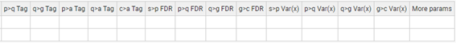
Figure 29. Task-table example with advanced parameters for WSPPG-SBT module.
This module performs the integrations peptide2protein, peptide2peptideall, protein2cagegory and category2cagtegoryall. The SBT algorithm is used to analyze coordinated protein changes.
The parameters/columns of this module are:
· Forced execution: checkbox that determines to force the execution or not.
· Experiment: is the name of experiment. Only the data with the value specified in 'Experiment' column will be extracted.
· Identifier column header: is the name of column with the identifier that describes unequivocally a scan.
· Ratio numerator column: specifies which sample quantification values make up the numerator for the calculation of log2-ratio values.
· Ratio denominator column(s): specifies which sample quantification make up the denominator for the calculation of log2-ratio values.
· Output Sample folder: indicates the name of the folder where the data file of level will be saved.
This module accepts advanced parameters:
· p>q Tag, p>a Tag, c>a Tag: labels that below to accept or discard elements is the calculation of variance for the integrations: peptide2protein, peptide2peptideall, and category2categoryall, respectively. By default, the “outliers” are discarded.
· p>q FDR, q>c FDR: limit of False Discovery Rate different than 0.01 (1%) for the following integrations: peptide2protein, and protein2category. If FDR = 0, then the “outliers” are not discarded.
· p>q Var(x), q>c Var(x): force a variance for the integrations: peptide2protein, and protein2category. By default, the variance calculated by first “sanxot” is applied.
· More params: allows to add more parameters to the programs inside the program. For more detail read “More params” in “Special Parameters” section.
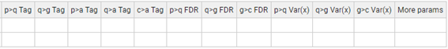
Figure 30. Task-table example with advanced parameters for WPP-SBT module.
This module performs the integrations peptide2protein, protein2gene, and gene2category. In addition, there are the integrations peptide2gene, peptide2peptideall, protein2proteinall, gene2geneall, and category2categoryall. After all these integrations, the SBT algorithm follows to analyze coordinated gene changes.
The parameters/columns of this module are:
· Forced execution: checkbox that determines to force the execution or not.
· Experiment: is the name of experiment. Only the data with the value specified in 'Experiment' column will be extracted.
· Identifier column header: is the name of column with the identifier that describes unequivocally a scan.
· Ratio numerator column: specifies which sample quantification values make up the numerator for the calculation of log2-ratio values.
· Ratio denominator column(s): specifies which sample quantification make up the denominator for the calculation of log2-ratio values.
· Output Sample folder: indicates the name of the folder where the data file of level will be saved.
This module accepts advanced parameters:
· p>q Tag, q>g Tag, p>a Tag, c>a Tag: labels that below to accept or discard elements is the calculation of variance for the integrations: peptide2protein, protein2gene, peptide2peptideall, and category2categoryall, respectively. By default, the “outliers” are discarded.
· p>q FDR, q>g FDR, g>c FDR: limit of False Discovery Rate different than 0.01 (1%) for the following integrations: peptide2protein, protein2gene and gene2category. If FDR = 0, then the “outliers” are not discarded.
· p>q Var(x), q>g Var(x), g>c Var(x): force a variance for the integrations: peptide2protein, protein2gene and gene2category. By default, the variance calculated by first “sanxot” is applied.
· More params: allows to add more parameters to the programs inside the program. For more detail read “More params” in “Special Parameters” section.
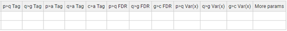
Figure 31. Task-table with advanced parameters for WPPG-SBT module.
The task-tables accept some keywords that represent values mostly related to the working project. The keywords are the following:
· __IDQFIL__ represents the Identification-Quantification file (ID-q file). This keyword is used mainly by the task-table of RELS CREATOR module. When the workflow is using an adaptor and we don’t know “a priori” the ID-q created by the adaptor, we use this __IDQFIL__ keyword in the “Table from which RT is extracted” parameter.
It is possible to add multiple samples within the “Sample folder(s)” parameter in the task-tables. For example, having the following task-table for LEVEL CREATOR module:
We can add multiple samples separated by comma.
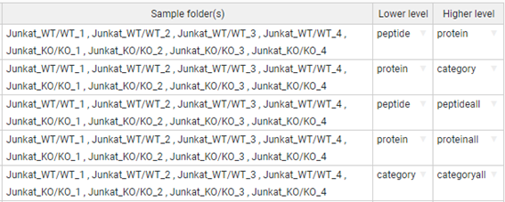
Apart of include multiple samples separated by comma, there is the asterisk is used as a wildcard. This asterisk means “zero or more characters” for the “Sample folder(s)” parameter in the task-tables. If we have the following task-table for LEVEL CREATOR module:
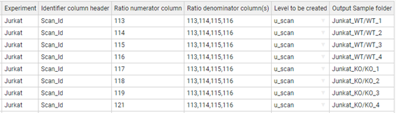
Each row is the ratio saved in its corresponding “Output Sample folder”. E.g. the ratio of 113 with the mean of 113,114,115,116 is saved in “Junkat_WT/WT_1”, the ratio of 114 is saved in “Junkat_WT/WT_2”, and so on. One way to create the task-table of INTEGRATE module could be as illustrate the below table where each row represents a sample and its integration.
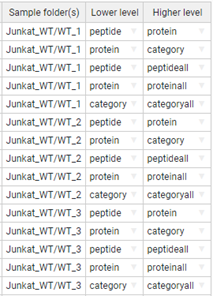
However, it is an easy way to do applying the asterisk wildcard. The task-table below allows to select the multiple sample folders. E.g. “Junkat_WT/*” selects all the sample folders within the “Junkat_WT”, and “Junkat_KO/*” selects all the sample folders within the “Junkat_KO”.
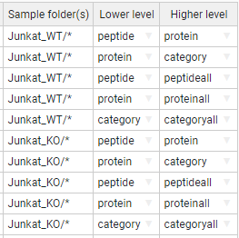
We can reduce this expression even more using only asterisk. The first row of the following task-table takes the “peptide” level for all samples folders of this project, the second row takes the “protein” levels for all sample folders, and so on.
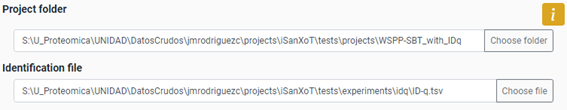
The Main-Input adaptor provides the following parameters to your project:
· Project folder: describes the path to the folder where iSanXoT output files will be stored.
· Identification file: specifies the location of the file that contains the identification and quantification data.
Figure 32. Panel of Main-Input adaptor with a worked-out example.
The unique requirements for the Identification/quantification file are:
· Experiment column that contains the multiple names of your experiments.
· A column with identifiers that describe unequivocally a level. For example, if you want to use a WSPP-SBT “Complete module”, your identification file has to contain a column that describes the scans in a unique way.
This adaptor allows you to transform the output of Proteome Discoverer (PD) into an Identification-Quantification file appropriate for iSanXoT workflows. iSanXoT has been tested for the outputs of PD 2.5.
The adaptor uses the following fields:
· Output folder: describes the path to the folder where iSanXoT output files will be stored.
· Default Input folder: specifies the location of the files containing PSM identification and quantification data (the PSMs.txt files).
· Input files: indicates which of the PSM.txt files stored in the input folder must be considered by iSanXoT. PSMs.txt file names are listed under Infile, while their experiment allocation is indicated in Experiment.
The following figure displays six PSMs.txt files originate from the same experiment (termed “Jurkat”), but larger projects may encompass several experiments (e.g. “TMT1”, “TMT2” and “TMT3”; or “Exp1”, “Exp2” and “Exp3”).
Figure 33. Panel of "Input from PD" adaptor with a worked-out example.
The PSM.txt files are plain text files that reveal information for every PSM obtained upon database searching; however, only a reduced subset of these data will be accessed by iSanXoT, as shown in the following Table.
|
Data accessed by iSanXoT from the Proteome Discoverer results (PSMs.txt files) |
|
|
Header |
Description |
|
Spectrum File |
Name of the raw LC-MS/MS file |
|
First Scan |
Scan number identifier |
|
Sequence |
Peptide amino acid sequence |
|
Modifications |
Unimod[1] chemical or posttranslational modifications to peptide sequence |
|
Charge |
Peptide charge |
|
Search Engine Rank |
Rank of search engine |
|
XCorr |
Cross-correlation value as provided by SEQUEST[2] algorithm |
|
MHplus in Da |
Measured monoisotopic protonated peptide mass in Da |
|
Theo MHplus in Da |
Theoretical monoisotopic protonated peptide mass in Da |
|
Delta M in ppm |
Difference between measured and theoretical monoisotopic mass in ppm |
|
Protein Accessions |
Accession codes for the proteins to which the peptide sequence is ascribed |
|
Protein Descriptions |
List of protein descriptions separated by comma |
|
113-121, 126-131, etc |
Intensity of reporter ions |
iSanXoT relies on the probability ratio (pRatio) method, an algorithm that calculates the probability of random peptide matching and provides the corresponding FDR for peptide identification. The FDR parameters displays the following fields:
· Forced execution: checkbox that determines to force the execution or not.
· Experiment: the aforementioned experiment allocation.
· Threshold (ppm): is the postscoring mass filtering cut-off to be applied after using wide mass windows in the database search, as was the case with these sample data. Threshold is actually equivalent to the relative deviation experimentally observed for precursor ions in a particular LC-MS/MS run.
· Isotopologue recovery: allows pRatio to recover precursor m/z values matching some 13C isotopologue when using wide mass windows in the LC-MS/MS acquisition that otherwise would remain unnoticed. For that, it must be indicated whether precursor m/z values should be tracked only around their experimental m/z (value = 1) or also ± 1 Th (value = 3) and ± 2 Th (value = 5, the one used here) away.
· FDR cutoff: establishes the FDR cut-off for PSM validation. The value used here (0.01, i.e. 1% FDR) implies that one in every 100 validated PSMs is incorrect.
· Score: determines the score used to calculate the FDR. These scores are “XCorr” (SEQUEST5 cross correlation score), or “cXCorr” (the corrected XCorr) will be used by pRatio for FDR calculation.
· Decoy label: is the tag attached to decoy protein identifiers in the concatenated protein database previously used for peptide identification (“INV_” in this example).
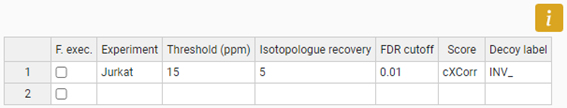
Figure 34. Task-Table of FDR module.
This adaptor allows you to transform the output of MSFragger [4] into an Identification-Quantification file appropriate for iSanXoT workflows. iSanXoT has been tested for the outputs of MSFragger version 3.1.1 (with FragPipe version 14.0).
The adaptor uses the following fields:
· Output folder: describes the path to the folder where iSanXoT output files will be stored.
· Default Input folder: specifies the location of the files containing results files.
· Input files: indicates which of the text plain files stored in the input folder must be considered by iSanXoT. The file names are listed under Identification file column, while their experiment is indicated in Experiment column.
So far, the MSFragger version used did not contain the quantification values. Thus, this adaptor allows you to extract the quantification values from the “mzML” files and then, pair them with the identifications. For that, the “Input files” table has the “advanced options”:
· Quantification file (in mzML format): indicating the mzML names if the files are located in the “Default Input folder”, or giving the absolute path of mzML files.
· Quan method: table files that describes the ion isotopic.
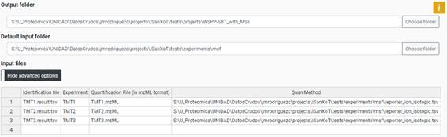
Figure 35. Panel of "Input from MSF" adaptor with a worked-out example.
The results files are plain text files that reveal information for every PSM; however, only a reduced subset of these data will be accessed by iSanXoT, as shown in the following Table.
|
Table. Data accessed by iSanXoT in the results from MSFragger |
|
|
Header |
Description |
|
scannum |
Scan number identifier |
|
peptide |
Peptide amino acid sequence |
|
modification_info |
Unimod chemical or posttranslational modifications to peptide sequence |
|
charge |
Peptide charge |
|
hit_rank |
Rank of search engine |
|
calc_neutral_pep_mass |
Theoretical mass of the identified peptide ion in Da |
|
massdiff |
Difference between measured and theoretical precursor neutral mass |
|
protein |
Accession codes for the proteins to which the peptide sequence is ascribed |
This adaptor also contains the probability ratio method that calculates the probability of random peptide matching and provides the corresponding FDR for peptide identification. This module contains the same parameters than the “Input from PD” adaptor. It should be pointed out that score to use has to be the “hyperscore” from MSFragger.
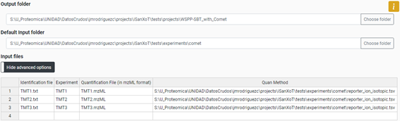
Figure 36. Task-Table of FDR module for a work-out example with MSF input.
This adaptor allows you to transform the output of MaxQuant into an Identification-Quantification file appropriate for iSanXoT workflows. iSanXoT has been tested for the outputs of MaxQuant 1.6.5.0.
The adaptor uses the following fields:
· Output folder: describes the path to the folder where iSanXoT output files will be stored.
· Default Input folder: specifies the location of the files containing results files.
· Input files: indicates which of the text plain files stored in the input folder. The “modificationSpecificPeptides.txt” is the file considered by iSanXoT. The file names are listed under Identification file column, while their experiment is indicated in Experiment column.
Identifier of the associated modification summary stored in the file “modificationSpecificPeptides.txt”. The following figure displays originate file from the experiment (called “PME12”), but larger projects may encompass several experiments.
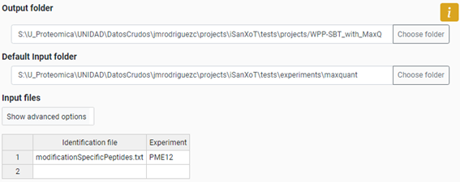
Figure 37. Panel of "Input from MaxQuant" adaptor with a worked-out example.
The results files are plain text files that reveal information for every PSM; however, only a reduced subset of these data will be accessed by iSanXoT, as shown in the following Table.
|
Data accessed by iSanXoT from the MaxQuant (modifiedSpecificPeptides.txt) |
|
|
Header |
Description |
|
Sequence |
Peptide amino acid sequence |
|
Modifications |
Post-translational modifications contained within the sequence |
|
Score |
Andromeda identification score for the MS/MS spectrum |
|
Proteins |
The IPI identifiers of the proteins the identified peptide is associated with. |
|
Protein Names |
List of protein descriptions separated by comma |
|
Intensities … |
The intensities of the peaks in the fragmentation spectrum after top-N filtering |
The analysis of Label-Free starts with the quantification data from the peptide level and therefore, the WPP-SBT and WPPG-SBT “Complete modules” that start the integration at peptide level have been thought to these statistical analyses.
[1] Trevisan-Herraz M. et al. (2019) SanXoT: a modular and versatile package for the quantitative analysis of high-throughput proteomics experiments. Bioinformatics. 35, 1594-96.
[2] Garcia-Marques, F., et al., A Novel Systems-Biology Algorithm for the Analysis of Coordinated Protein Responses Using Quantitative Proteomics. Mol Cell Proteomics, 2016. 15(5): p. 1740-60.
[3] Navarro, P., et al., General statistical framework for quantitative proteomics by stable isotope labeling. J Proteome Res, 2014. 13(3): p. 1234-47.
[4] Kong, A. T., Leprevost, F. V., Avtonomov, D. M., Mellacheruvu, D., & Nesvizhskii, A. I. (2017). MSFragger: ultrafast and comprehensive peptide identification in mass spectrometry–based proteomics. Nature Methods, 14(5), 513-520.